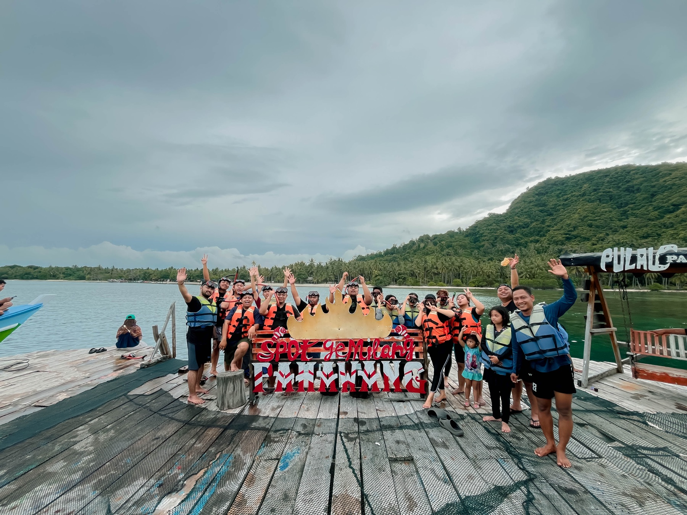

Choose terrain
Match destination and difficulty to the people and goal.
Outing & Outbound Outside · Energized
Nature changes the conversation. We build the destination, movement, challenge, and breathing room around what your team needs.
Take the team outside ↗
GETThe outdoors gives us a different canvas, but purpose, inclusion, safety, and hospitality still lead every decision.
Match destination and difficulty to the people and goal.
Balance active challenge, recovery, reflection, and social time.
Rehearse routes, brief vendors, and build contingencies.
Keep every group safe, informed, and meaningfully engaged.
This is a one-day structure example, not a published event schedule. Timing, places, activities, transport, meals, accessibility, and weather plans are set after the brief and site survey.

THE OUTCOME / ADVENTURE · TRUST · SHARED STORY